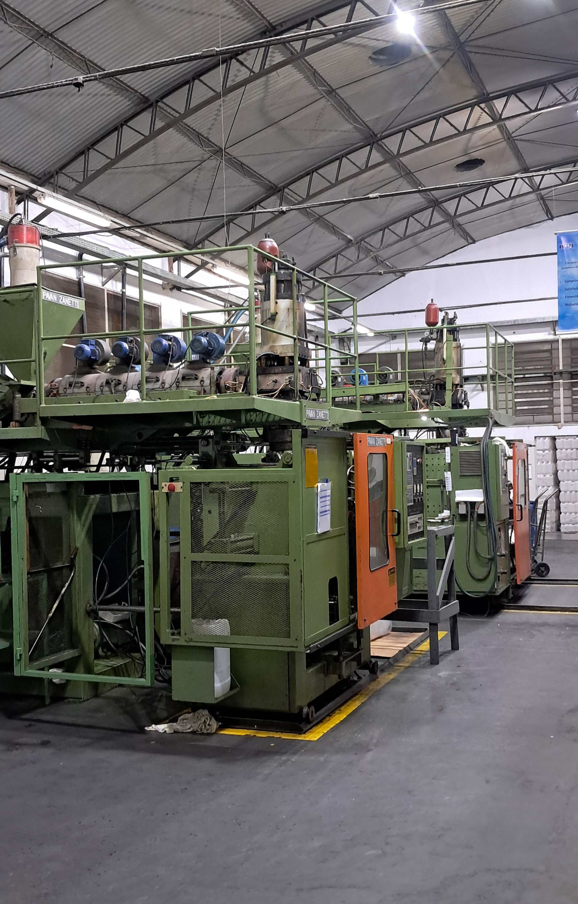

A Incepi do Brasil
Em maio de 1989, nascia em São Paulo a Incepi do Brasil Indústria e Comércio de Embalagens Plásticas Industriais Ltda, uma empresa pioneira que conquistou seu espaço em um segmento até então restrito a poucas corporações de grande porte.
A Incepi iniciou suas atividades fabricando galões de cinco litros, tendo como foco principal buscar o que havia de melhor em matéria-prima e tecnologia para alcançar o reconhecimento de mercado através da excelência em seus serviços.
Ao longo de sua trajetória, a empresa cresceu, adquiriu maquinário de última geração, diversificou seu portfólio de produtos e consolidou seu respeito no setor de embalagens plásticas, mantendo inegociável o compromisso inicial com a qualidade.

Compromisso e Tecnologia
O êxito contínuo de nossas soluções é fruto da sólida parceria entre clientes e fornecedores, sempre alinhados às tendências do mercado e à missão de superar expectativas.
Nossas linhas são desenvolvidas com avançados recursos tecnológicos e mão de obra altamente especializada. Atualmente, atuamos com capacidade produtiva em diversas volumetrias para atender diferentes demandas industriais: